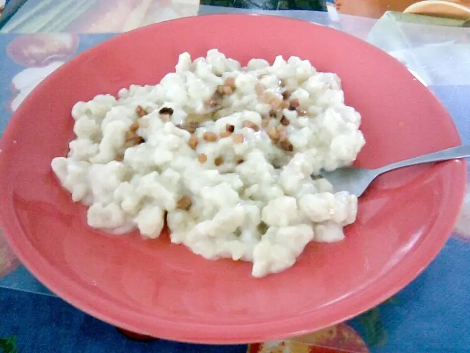

Фото: Matus Kacmar, CC BY 2.0

Галушки полтавские
Отварные кусочки теста на кефире с жареным луком и сметаной
45 мин4 порц.556 ккал на порциюБ 15 · Ж 20 · У 78Украинская кухня
Продукты на 4 порц.
- Мука пшеничная2,5 стак.
- Кефир250 мл
- Яйцо куриное1 шт
- Сода0,5 ч. л.
- Соль2 ч. л.
- Лук репчатый2 шт
- Сливочное масло40 г
- Сметана 20%6 ст. л.
Как готовить
- Смешайте кефир с содой, яйцом и 1 ч. л. соли. Всыпайте муку и замесите мягкое тесто, которое не липнет к рукам. Оставьте на 15 минут.
- Скатайте из теста колбаски толщиной 2 см и нарежьте кусочками по 2 см.
- Опустите галушки в большую кастрюлю кипящей подсоленной воды, помешайте. Варите 7-8 минут после всплытия, пока они не станут пышными.
- Пока варятся галушки, обжарьте лук в сливочном масле на среднем огне 8 минут до золотистого цвета.
- Откиньте галушки шумовкой, перемешайте с луком и маслом. Подавайте со сметаной.
Совет. Варите галушки в большом количестве воды и небольшими порциями, иначе они слипнутся. Разрежьте одну: внутри не должно быть сырой полоски.